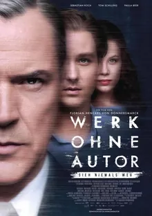

The genetics
Nazi eugenics is a central thread of this film, loosely inspired by the life of the painter Gerhard Richter. Elisabeth's diagnosis of schizophrenia leads to her forced sterilisation and murder under Aktion T4, the Nazi programme in which physicians selected patients deemed incurably ill to be killed. The man responsible, Professor Seeband, is a physician who embraces this racial hygiene, escapes justice, and continues to think in its terms after the war, judging his daughter's suitor genetically inferior and performing an unnecessary abortion to stop the couple having a child together. He is shown as a capable doctor whose career survives changes of regime without his ever being held to account. The film does not deal with modern genetics but with the history of eugenic ideas, their victims and the silence that followed.
The story
As a child in Nazi Germany, Kurt Barnert is close to his young aunt Elisabeth, who tells him to "never look away". After a psychotic episode she is diagnosed with schizophrenia, then forcibly sterilised and later killed in the Nazi euthanasia programme on the orders of the SS gynaecologist Professor Carl Seeband. After the war Seeband escapes punishment by saving the wife and child of a Soviet officer, who then protects him. In East Germany, Kurt studies painting and falls in love with a fashion student, Ellie, who turns out to be Seeband's daughter; neither knows of the connection. Seeband considers Kurt genetically inferior and tries to break them up, even performing an abortion on Ellie under a false medical pretext. The couple marry and flee to West Germany, where Kurt studies at the Düsseldorf Art Academy. He finds his artistic voice by painting blurred copies of photographs, including images of Seeband and of his aunt, and has his first successful exhibition.